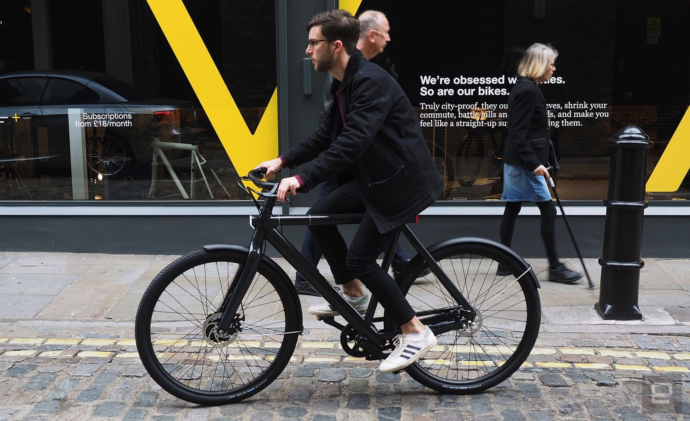
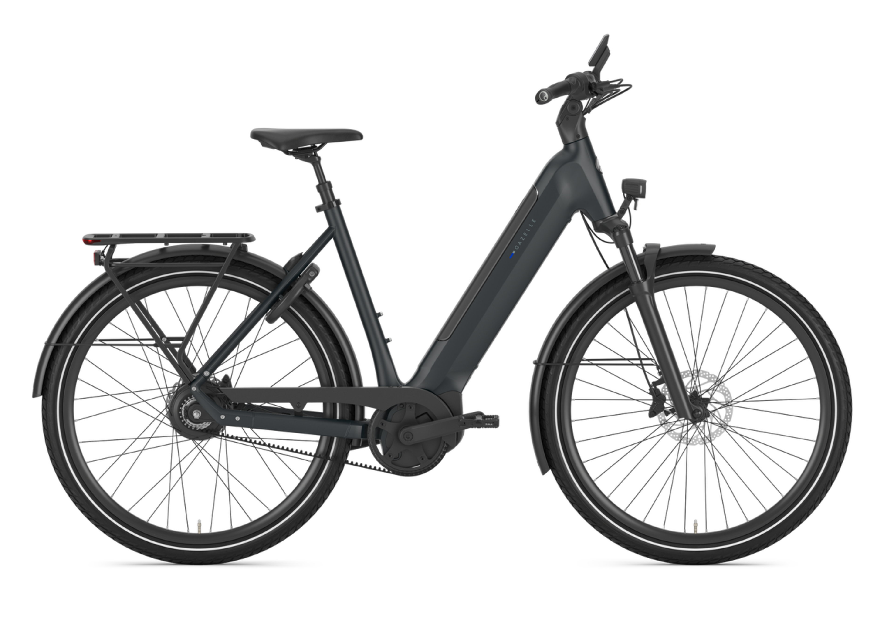
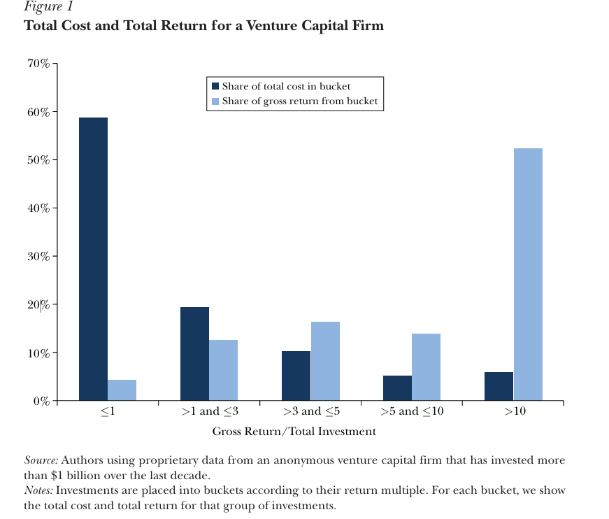
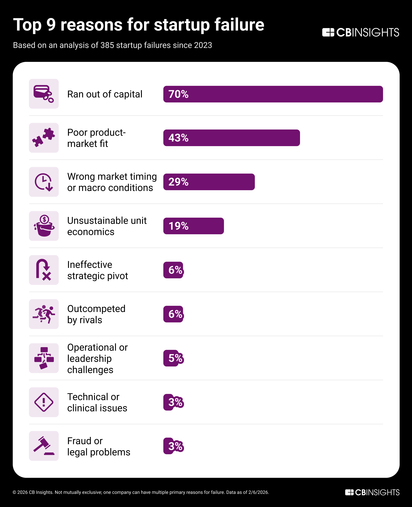
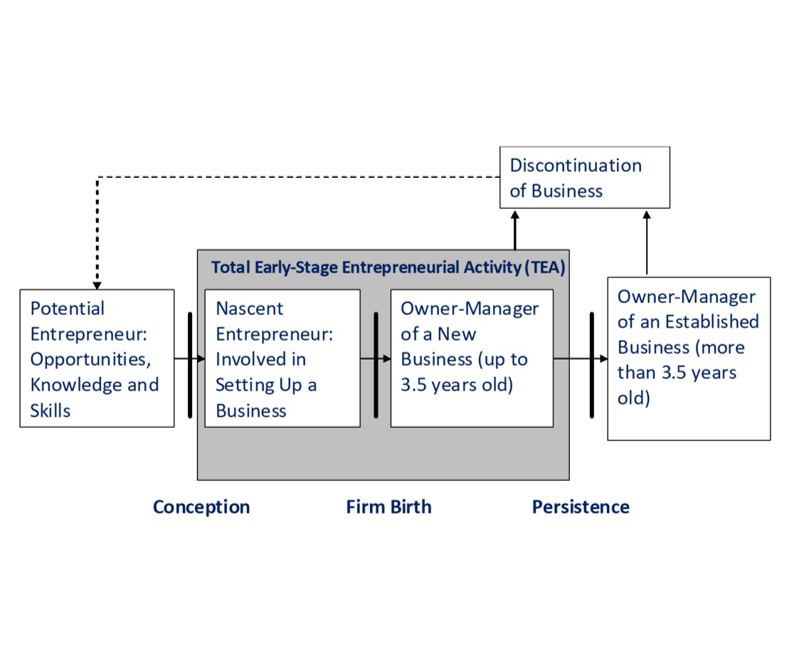
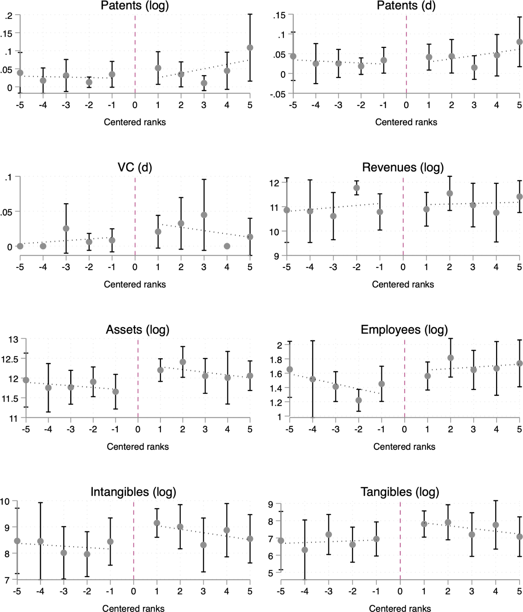
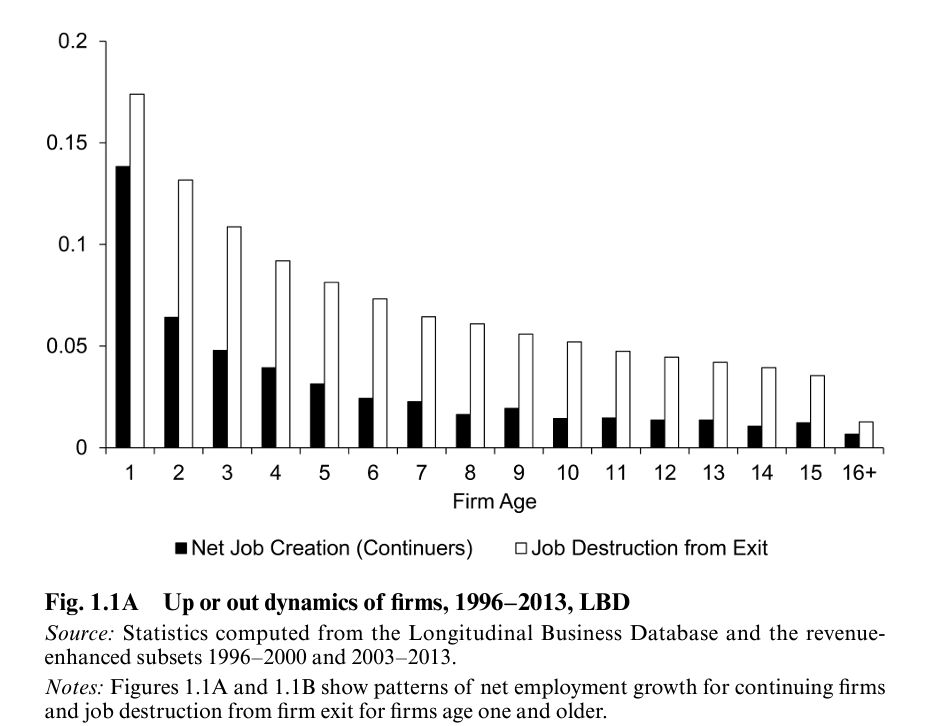
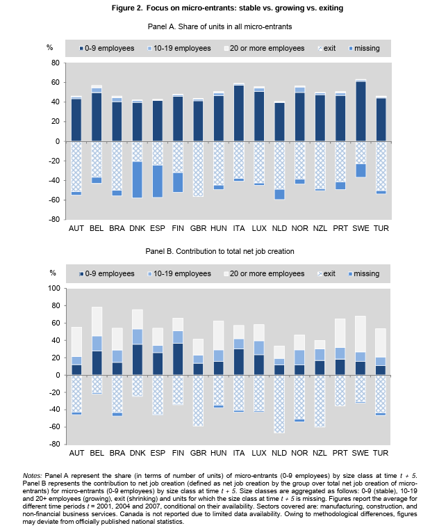
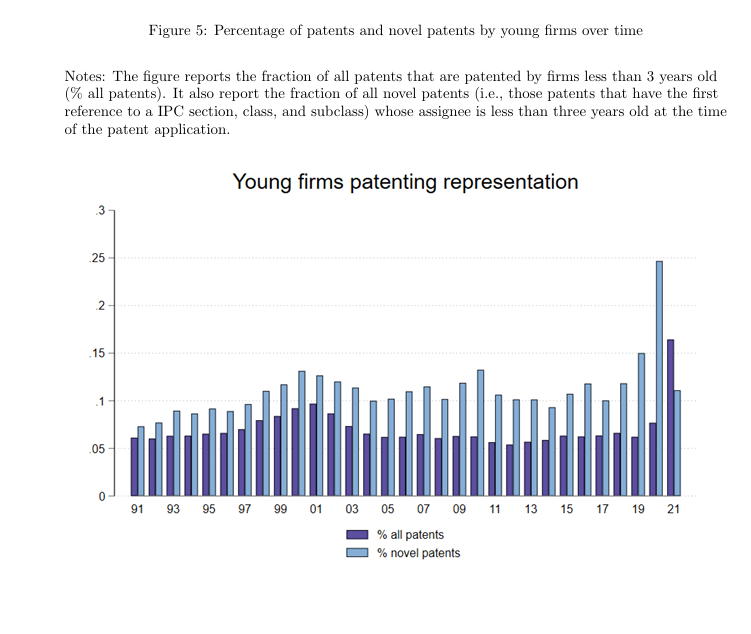

Entrepreneurship is the pursuit of opportunity beyond resources controlled.
— Howard StevensonWhy does Jibo fit our definition of entrepreneurship?
Entrepreneurs face greater uncertainty.
Entrepreneurs face highly-skewed outcomes.
Entrepreneurs are highly resource-constrained.
Will customers want it — and at what price?
Can it actually be built — and will it work?
Can the team deliver, hire, and scale?
Can we afford to find out?

Vanmoof S2 New product, new(ish) firm, new category
Gazelle Ultimate c380 Established brand, established product
At this major VC, almost 60% of investments fail;
only ~6% are big successes.

Only a small founding team — often a solo entrepreneur — at the start.
Entrepreneurs are typically cash-constrained.
Lack of high-end equipment, production facilities, …
IP, goodwill, brand value yet to be built.

Source: CB Insights — Top reasons startups fail
If we want to know the answer to many of these questions, we first need to know…
Share of adults aged 18–64 who are starting or running a new business (TEA)
Source: Global Entrepreneurship Monitor (GEM), 2023
All 45 economies in the 2023 GEM survey, ranked
Source: Global Entrepreneurship Monitor (GEM), 2023

Many new ventures are mundane, hobby businesses that generate little private or social value — “subsistence” rather than “transformational” entrepreneurship.
A focus on new firms (≤ 3.5 years) excludes the growth and exit stages of entrepreneurship.
Excludes people who are in the entrepreneurial process but never reach the stage of actually setting up a business (survival bias) — roughly 50% of everyone who considers starting a business (Bennett & Chatterji, 2023).
2018 TEA rate vs. share of TEA who are innovative entrepreneurs
Innovative entrepreneur (GEM) — share of those involved in TEA who indicate that their product or service is new to at least some customers and that few or no other businesses offer the same product.
Source: Global Entrepreneurship Monitor (GEM), 2018 — Angola substitutes for Ecuador, which was not surveyed in 2018
2023 TEA rate vs. share of TEA with high job creation expectation
High job creation expectation (GEM) — share of those involved in TEA who expect to create 6 or more jobs in the next 5 years.
Source: Global Entrepreneurship Monitor (GEM), 2023
2022 TEA rate vs. share of TEA who are necessity entrepreneurs
Necessity entrepreneur (GEM) — share of TEA who responded that they became an entrepreneur “to earn a living because jobs are scarce” (variable TEA22MOT4yes).
Source: Global Entrepreneurship Monitor (GEM), 2022
Global GEM 2022 — weighted across all 49 surveyed economies
| Gender | TEA rate | Entrepreneurial intentions |
|---|---|---|
| ♂Male | 11.8% | 20.1% |
| ♀Female | 7.7% | 14.7% |
| Overall | 9.7% | 17.3% |
Entrepreneurial intentions (futsup) — share of the 18–64 population (excluding those already engaged in entrepreneurial activity) who intend to start a business within the next three years.
Source: Global Entrepreneurship Monitor (GEM) Adult Population Survey, 2022 — computed from individual-level data (weighted), n ≈ 172,000 respondents.
Source: CBS, Werkzame beroepsbevolking; positie in de werkkring (×1,000 persons)
| All | Salaried | Self-employed | |||
|---|---|---|---|---|---|
| All | Unincorp. | Incorp. | |||
| Observations | 1,225,886 | 1,108,591 | 117,295 | 75,476 | 41,819 |
| 100.0% | 90.4% | 9.6% | 6.2% | 3.4% | |
| A. Labour market outcomes | |||||
| Mean earnings | $47,515 | $46,421 | $58,174 | $40,820 | $89,169 |
| Median earnings | $36,090 | $36,363 | $34,190 | $24,625 | $55,591 |
| Median hourly earnings | $18.0 | $18.0 | $17.4 | $13.8 | $24.6 |
| Annual hours worked | 1,985 | 1,976 | 2,078 | 1,936 | 2,331 |
| Full-time, full-year | 0.69 | 0.70 | 0.64 | 0.57 | 0.78 |
| B. Demographics | |||||
| Age | 40.2 | 40.0 | 42.9 | 42.4 | 43.6 |
| White | 0.70 | 0.69 | 0.79 | 0.76 | 0.83 |
| Female | 0.48 | 0.49 | 0.36 | 0.40 | 0.28 |
| Years of schooling | 13.7 | 13.7 | 13.9 | 13.6 | 14.5 |
| College graduate (or more) | 0.33 | 0.33 | 0.36 | 0.31 | 0.46 |
Source: Levine & Rubinstein (2017), “Smart and Illicit: Who Becomes an Entrepreneur and Do They Earn More?”, QJE 132(2), Table I, Panel A (CPS 1996–2012).
“The basic hypothesis is that, while the total supply of entrepreneurs varies among societies, the productive contribution of the society’s entrepreneurial activities varies much more because of their allocation between productive activities such as innovation and largely unproductive activities such as rent seeking or organized crime. This allocation is heavily influenced by the relative payoffs society offers to such activities.”— Baumol (1990), Journal of Political Economy 98(5), 893–921
“We document a null effect of [local public programs targeting innovative start-ups] over a wide range of firm-level outcomes. However, we find that securing local subsidies increases start-ups’ probability to obtain additional public subsidies, which points in the direction of a vicious ‘Matthew effect’ in subsidy allocation.”— Santoleri & Russo (2025), Research Policy 54(1)


Source: Alon, Berger, Dent & Pugsley (2018), “Older and slower: The startup deficit’s lasting effects on aggregate productivity growth”, Journal of Monetary Economics 93, 68–85.

Source: Haltiwanger, Jarmin, Kulick & Miranda (2016), “High-growth young firms”, in Measuring Entrepreneurial Businesses, NBER / University of Chicago Press, 11–62.

Source: Calvino, Criscuolo & Menon (2016), “No Country for Young Firms?”, OECD STI Policy Papers No. 29, OECD Publishing.

Source: Ewens, Michael & Matt Marx, “Firm Age and Invention: An Open Access Dataset”, Working Paper.
The slides and the data behind every graph in this lecture are available at: